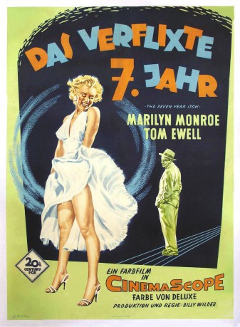

#3678 Das Verflixte 7. Jahr
Alternativ: The Seven Year Itch
Auszeichnungen: 1 GoldenGlobes gewonnen
 
 IMDB-Wertung: 7.2 / 10
IMDB-Wertung: 7.2 / 10  Metascore: 0
Metascore: 0 
Hochsommer in New York: Lektor Richard Sherman (Tom Ewell) will endlich mal in Ruhe arbeiten und schickt Frau und Sohn in die Ferien. Doch ein Blumentopf lässt alle Arbeit vergessen. Denn diesen hat die schöne Dame vom Balkon der Dachgeschosswohnung unbeabsichtigt auf Richards Kopf fallen lassen. Nun glaubt Richard, dass ihn die hübsche Blondine (Marilyn Monroe), die ein Stockwerk höher wohnt, ständig in Versuchung führen will...
Jahr: 1955
Dauer: 104 Minuten
FSK: 12
Land: USA Studio: 20th Century FoxTonspuren: DTS - ,
Untertitel: Englisch, Deutsch,
Auflösung: 1080p (1920x752) Größe: 10240 MB
Genre: Komödie, Liebe
Regisseur:  Billy Wilder
Billy Wilder
Drehbuch: Joe Grant
Soundtrack:
Darsteller:
 Marilyn Monroe als The Girl
Marilyn Monroe als The Girl- Tom Ewell als Richard Sherman
- Evelyn Keyes als Helen Sherman
- Sonny Tufts als Tom MacKenzie
- Robert Strauss als Mr. Kruhulik
- Marguerite Chapman als Miss Morris
- Carolyn Jones als Miss Finch
 Kathleen Freeman als Woman at Vegetarian Restaurant , uncredited
Kathleen Freeman als Woman at Vegetarian Restaurant , uncredited Ron Nyman als Indian , uncredited
Ron Nyman als Indian , uncredited- Oskar Homolka als Dr. Brubaker
- Victor Moore als Plumber
- Dolores Rosedale als Elaine
- Donald MacBride als Mr. Brady
- Dorothy Ford als Indian Girl / Tall Beauty at Train Station , uncredited
- Ralph Littlefield als Man at Vegetarian Restaurant , uncredited
- Doro Merande als Waitress at Vegetarian Restaurant , uncredited
- Tom Nolan als Ricky Sherman , uncredited
- Ralph Sanford als Train Station Gateman , uncredited
- Mary Young als Woman in Train Station , uncredited
Datei: X:\1950-1959\Verflixte 7. Jahr, Das (1955, FSK12, 1920x752).mkv seit 18.05.2016
Festplatte: HD 1900-1970
 Es gibt insgesamt 141 Filme in der Gruppe '1950-1959'
Es gibt insgesamt 141 Filme in der Gruppe '1950-1959'